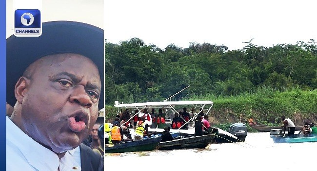

Death Toll From Bayelsa Boat Accident Rises To 29

The death toll from Friday’s boat accident in Southern Ijaw Local Government Area of Bayelsa State has risen to 29. Governor Douye Diri gave the figure during a condolence visit by Vice President Kashim Shettima, saying more than 50 survivors were receiving treatment in hospitals. The final casualty count remains uncertain as recovery teams continue efforts to retrieve the boat. Diri said some passengers might still be trapped inside it.
The accident occurred on November 20, 2026, near Oweikorogha Community in the Ukubie area. The boat was carrying mourners from Ayama Community to a burial ceremony in Ukubie when it capsized at about 11 a.m., according to the Bayelsa State Police Command. A preliminary police report said the vessel developed a mechanical fault while travelling along the waterways. Rescue operations followed, with several passengers rescued and others initially reported missing.
Diri described the accident as avoidable, alleging that the boat was unfit for river travel and had departed from an unauthorised loading point. A survivor also alleged that the wooden passenger boat, commonly known as a “love boat,” was overloaded with passengers and their belongings. The governor said the state government had assumed responsibility for survivors’ medical bills and feeding.
President Bola Tinubu expressed condolences to the victims’ families and directed federal disaster response agencies to assist with rescue and recovery efforts. He also approved ₦250 million in support for the families. Diri thanked the President for the response and Shettima for visiting the state, and called for federal support to build more roads in Bayelsa. He said improved road access could reduce some communities’ reliance on water transport.
Source: Channels TV